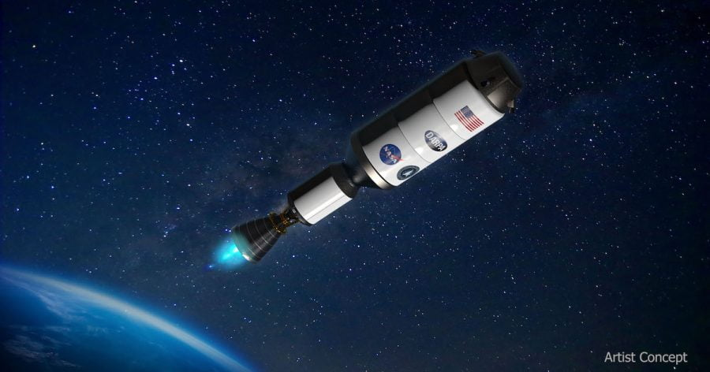

အင်္ဂါဂြိုဟ် (မားစ်) ကို ၄၅ ရက်နဲ့ အရောက် သွားနိုင်မည့် အဏုမြူ စွမ်းအင်သုံး ဒုံးစက်အင်ဂျင်ကို စမ်းသပ်ဖို့ ပြင်ဆင်နေတယ်လို့ နာဆာရဲ့ သတင်း ထုတ်ပြန်ချက် အရ သိရှိ ရပါတယ်။
အမေရိကန် ပြည်ထောင်စု အာကာသ အေဂျင်စီ ဖြစ်တဲ့ နာဆာ အဖွဲ့ကြီးဟာ ပင်တဂွန် ကာကွယ်ရေး ဌာနရဲ့ သုတေသန ဌာနဖြစ်တဲ့ Defense Advanced Research Projects Agency (DARPA) နဲ့ ပူးပေါင်းပြီး အဏုမြူ စွမ်းအင်သုံး ဒုံးပျံ တစ်စင်းကို ဒီဇိုင်း ရေးဆွဲ နေပါတယ်။ နာဆာရဲ့ သတင်း ထုတ်ပြန်ချက် အရ လက်တွေ့ စမ်းသပ်နိုင်တဲ့ ဒုံးပျံ အင်ဂျင် တစ်ခုကို ၂၀၂၇ အမှီ တည်ဆောက် နိုင်ဖို့ ရည်မှန်းထား တယ်လို့ သိရပါတယ်။
နာဆာက လက်ရှိ အသုံးပြု နေတဲ့ ဒုံးပျံအင်ဂျင် တွေအားလုံးဟာ လောင်စာဆီ ပေါက်ကွဲမှုကို အခြေပြုတဲ့ အင်ဂျင်စနစ်တွေ ဖြစ်ကြပါတယ်။ ဒီစနစ်မှာ မီးလောင်လွယ်တဲ့ လောင်စာရည်ကို အောက်ဆီဂျင်နဲ့ ပေါင်းစပ်ပြီး မီးရှို့ လောင်ကြွမ်း စေတဲ့ နည်းလမ်းနဲ့ အင်ဂျင်ကို မောင်းနှင်တာ ဖြစ်ပါတယ်။
အခု စမ်းသပ်မယ့် အဏုမြူ စွမ်းအားသုံး ဒုံးအင်ဂျင် စနစ်ကတော့ အက်တမ်ကို ကွဲအောင် ခွဲပြီး ဖြစ်ပေါ်တဲ့ အဏုမြူ ဓါတ်ပြုမှုကနေ ထွက်လာတဲ့ စွမ်းအင်ကို အသုံးချပြီး အင်ဂျင်ကို တွန်းအားကို ဖန်တီးမှာ ဖြစ်ပါတယ်။ ဒီနည်းနဲ့ ရရှိတဲ့ တွန်းကန်အားဟာ လက်ရှိ လောင်စာ ပေါက်ကွဲမှုနဲ့ မောင်းနှင်တဲ့ အင်ဂျင်တွေက ထုတ်ပေးတဲ့ တွန်းကန်အားထက် အနည်းဆုံး ၃ ဆ ပိုပြီး အားကောင်းလိမ့်မယ်လို့ ဆိုပါတယ်။
ဆက်စပ်ဆောင်းပါး – လပေါ်တွင် GPS လမ်းညွှန် အသုံးပြုနိုင်ရန် နာဆာကြိုးစားနေ
ဒီလို ပိုမို သာလွန်တဲ့ တွန်းကန်အားကြောင့် လက်ရှိ ၇ လ ကြာမြင့်တဲ့ အင်္ဂါဂြိုဟ် ခရီးကို အဆပေါင်း များစွာ လျှော့ချ ပေးနိုင်မှာ ဖြစ်တယ်လို့ ဆိုပါတယ်။
“ကာကွယ်ရေး သုတေသန ဌာနနဲ့ နာဆာတို့ဟာ အဆင့်မြင့် နည်းပညာ သုတေသနတွေမှာ ပူးပေါင်းဆောင်ရွက် ခဲ့မှုကြောင့် အောင်မြင်မှု ရရှိခဲ့တဲ့ အစဉ်အလာ ရှိပြီး ဖြစ်ပါတယ်။ ဒီ အောင်မြင်မှု တွေထဲမှာ လ ကို ပထမဆုံး လူလွှတ်တင် ခဲ့တဲ့ ဆေတန် ၅ ဒုံးပျံက စလို့ ဂြိုဟ်တုတွေကို ပြင်ဆင်တဲ့ စက်ရုပ်တွေနဲ့ ဂြိုဟ်တု ဆီဖြည့်တဲ့ နည်းပညာ တွေအထိ ပါဝင်ပါတယ်” လို့ ပင်တဂွန် ကာကွယ်ရေး သုတေသန ဌာနရဲ့ သတင်း ထုတ်ပြန်ချက် မှာလဲ ဖေါ်ပြ ထားပါတယ်။
အဏုမြူ စွမ်းအင်ကို အသုံးပြုပြီး ဒုံးပျံတွေ မောင်းနှင်ဖို့ သုတေသန ပြုတာဟာ အခုအကြိမ်ဟာ ပထမဆုံး အကြိမ်တော့ မဟုတ်ပါဘူး။ ၁၉၅၉ ခုနှစ်ကတည်း စလို့ နာဆာ အဖွဲ့ကြီးဟာ အဏုမြူ စွမ်းအင်သုံး ဒုံးပျံ အင်ဂျင်တွေကို သုတေသန ပြုနေခဲ့တာ ဖြစ်ပါတယ်။ အဲ့သည် အချိန်က အဏုမြူ စွမ်းအင်သုံး အင်ဂျင် Nuclear Engine for Rocket Vehicle Application (NERVA) ကို မြေပြင်မှာ အောင်မြင်စွာ စမ်းသပ် နိုင်ခဲ့ပါတယ်။
ဒါပေမယ့် ၁၉၇၃ ခုနှစ်မှာတော့ လပေါ် လူလွှတ်တဲ့ အပိုလို စီမံကိန်း ပြီးဆုံး သွားတာနဲ့ အတူ နာဆာကို အစိုးရက ချပေးတဲ့ ဘတ်ဂျက်လဲကျဆင်း သွားပါတယ်။ အကျိုးဆက် ကတော့ ဒီ နျူကလိယ အင်ဂျင် သုတေသနကို အဲ့သည် နှစ်မှာပဲ ဖျက်သိမ်းလိုက်တာ ဖြစ်ပါတယ်။
ဆက်စပ်ဆောင်းပါး – နာဆာက အသစ်လွှတ်တင်မယ့် Nancy Grace Roman တယ်လီစကုပ်ကြီး
အဏုမြူ စွမ်းအင်သုံး အင်ဂျင်တွေဟာ လောင်စာရည်သုံး အင်ဂျင်တွေထက် တွန်းကန်အား ပိုကောင်းရုံ မက တာရှည်လဲ ပိုခံပါတယ်။ ဒါ့ကြောင့်မို့ အဏုမြူ အင်ဂျင်တွေဟာ ပိုမြန်အောင် မောင်းနှင် နိုင်သလို ပိုပြီး ကြာကြာလဲ မောင်းနှင်နိုင်မှာ ဖြစ်ပါတယ်။
အဏုမြူ စွမ်းအင်သုံး အင်ဂျင်တွေကို အဓိက အားဖြင့် နှစ်မျိုးနှစ်စား ခွဲခြား နိုင်ပါတယ်။ ပထမ အမျိုးကတော့ အဏုမြူ လျှပ်စစ် အင်ဂျင် (Nuclear Electric Propulsion (NEP) reactors) တွေ ဖြစ်ကြပါတယ်။ ဒီ အင်ဂျင်တွေဟာ အဏုမြူ စွမ်းအင်ကနေ လျှပ်စစ်ဓါတ်အား ထုတ်ပေးပြီး ဒီ ထွက်လာတဲ့ လျှပ်စစ်စွမ်းအင် နဲ့မှ ဇီနွန် (သို့) ခရစ်တွန် ဓါတ်ငွေ့ (xenon and krypton) တွေကနေ အီလက်ထရွန်ကို ကန်ထုတ်ပြီး တွန်းကန် မောင်းနှင်တဲ့ စနစ် ဖြစ်ပါတယ်။
နောက် အင်ဂျင် တစ်မျိုးကတော့ Nuclear Thermal Propulsion (NTP) reactors အင်ဂျင်တွေပဲ ဖြစ်ပါတယ်။ ဒီ အင်ဂျင်ဟာ အခု နာဆာက စမ်းသပ်နေတဲ့ အင်ဂျင် အမျိုးအစား ဖြစ်ပါတယ်။ ဒီစနစ် မှာတော့ အဏုမြူ ဓါတ်ပြုမှုက ထွက်လာတဲ့ အပူကို အသုံးပြုပြီး ဓါတ်ငွေ့ တမျိုးမျိုးကို အပူပေးတဲ့ နည်းဖြစ်ပါတယ်။ ဒီလို ပူလာတဲ့ ဓါတ်ငွေ့ဟာ အပူကြောင့် ပြန့်ကားလာပြီး အင်ဂျင် အပေါက်ကနေ အပြင်ကို အရှိန်နဲ့ တွန်းကန် ထွက်သွားမှာ ဖြစ်ပါတယ်။
နာဆာက ပညာရှင် တွေရဲ့ ခန့်မှန်းမှု အရတော့ ဒီ အဏုမြူ စွမ်းအင်သုံး ဒုံးအင်ဂျင်ဟာ အင်္ဂါဂြိုဟ် ခရီးကို အချိန် ၄၅ ရက်အတွင်း ရောင်နိုင်တဲ့ အထိ ကြာချိန်ကို လျှော့ချ ပေးနိုင်မှာ ဖြစ်တယ်လို့ ဆိုပါတယ်။
Ref: NASA to test nuclear rocket engine that could take humans to Mars in 45 days | Live Science
အဏုမြူ စွမ်းအင်သုံး ဒုံးအင်ဂျင် နာဆာစမ်းသပ်မည်

February 2, 2023
Other Posts
- ကမ္ဘာပေါ်ကို ပျက်ကျလာမယ့် တရုတ်အာကသစခန်း
- ရိုးရွိုက်စ်ရဲ့ ကမ္ဘာ့အမြန်ဆုံး လျှပ်စစ်စွမ်းအားသုံး လေယာဉ်
- အပြည်ပြည်ဆိုင်ရာ အာကာသစခန်းမှ ယာဉ်မှူးများ ကယ်ဆယ်ရေး နာဆာနှင့် SpaceX ဆွေးနွေး
- ချစ်ခြင်းမေတ္တာ ၏ ဘာသာစကား (၅) မျိုး
- James Webb တယ်လီစကုပ်ကြီး ပတ်လမ်းပေါ် ရောက်ပြီ
- ကြယ်ကြွေတယ် ဆိုတာဘာလဲ
- ဂလက်ဆီ တွေကြား တွယ်ရာမဲ့ လွင့်မြောနေတဲ့ ကြယ်များ
- သမိုင်းဝင် ကမ္ဘာ့အကြီးဆုံး ဒုံးပျံ Falcon Heavy ယနေ့လွှတ်တင်မည်
- ချက်နိုင်ငံက စိတ်ဝင်စားနေတဲ့ အစ္စရေး နိုင်ငံထုတ် Spyder လေကြောင်းရန်ကာကွယ်ရေး စနစ်
- ဘလက်ဟိုး တွင်းနက်က ကြယ်တလုံးကို ဝါးမြိုလိုက်တဲ့ ဖြစ်စဉ်